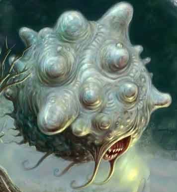

|
 |
Ambiente/Habitat | Qualsiasi |
| Frequenza | Molto Rara | |
| Organizzazione | Solitario o Piccolo Gruppo | |
| Periodo di Attività | Qualsiasi | |
| Dieta | Carnivora | |
| Intelligenza | Genius (17) | |
| Punti Combattimento | 30 Punti Combattimento | |
| Tesoro | Vedi Sotto | |
| Allineamento Dominante | Legale Malvagio | |
| Numero di Apparizione | 1d10: (1-7) 1 (8-10) 1d3+1 | |
| Classe Armatura | 7 [10 base, 3 corazza] | |
| Movimento | levitare 6 esagoni | |
| Dadi Vita | 6 (+5 punti ferita) | |
| Thac0 | 15 | |
| Numero di Attacchi | Morso | |
| Danni | 1d6+1 (Taglio) | |
| Poteri Offensivi | Psychic Blast; Sonic Wave; |
|
| Poteri Difensivi | Shield of
Force; Immunità ai Danni Sonori; Robustezza Superiore (+5 punti ferita); |
|
| Poteri Generici | Nessuna; | |
| Vulnerabilità | Nessuna; | |
| Resistenza alla Magia | 10% | |
| Sensi | Senso Primordiale (30 metri) | |
| Dimensioni | Medium (2 m. di diametro) | |
| Morale | Champion (15) | |
| Valore in Punti Esperienza | 1041 |
|
TIRI SALVEZZA DELLA CREATURA |
|||||||
| CORAGGIO | ENERGIA VITALE | MAGIA | MALATTIA | MENTE | RIFLESSI | ROBUSTEZZA | VELENO |
| 0 | 0 | +5% | 0 | +20% | -5% | 0 | 0 |
| 45 | 51 | 54 | 44 | 37 | 56 | 49 | 46 |
Descrizione
Lo Psychos è un'aberrazione dalla forma sferica altamente irregolare. Su tutta la superficie del suo corpo verde-grigiastro spuntano una sorta di grosse tumefazioni che costantemente pulsano cambiando di forma e dimensioni. Apparentemente lo Psychos non dispone di organi visivi ed uditivi mentre lo stesso è dotato di una bocca dove sono presenti appuntiti denti. In realtà lo Psychos percepisce benissimo ogni tipo di suono (anche ultrasuoni) potendosi considerare possedere una capacità di udire i rumori pari al 75% ed è dotato di un apparato sonar con il quale può vedere alla perfezione tutto quello si trova entro 30 metri dallo stesso. Lo Psychos si sposta levitando ad un metro dalla superficie (sia essa solida e liquida). La creatura, volendo, può abbassarsi fino a toccare il suolo ma non può levitare ad un'altezza superiore ad un metro dallo stesso.
Combat
Lo Psychos può mordere in corpo a corpo infliggendo 1d6+1 danni da lacerazione alla propria vittima. Mordere, però, non è il metodo di combattimento preferito dal mostro il quale può far ricorso alle proprie abilità psioniche e soniche.
PSYCHIC BLAST (Powerful Special Ability): Questo attacco consiste in un'aggressione psichica alla mente della sua vittima. Questa forma di attacco può essere utilizzata solo nei confronti delle creature normalmente soggette agli incantesimi mentali. Quest'azione attacco si considera a tutti gli effetti una free action che impone una penalità di +3 al fattore iniziativa delle successive eventuali azioni che può essere effettuata solo nei confronti di una creatura che si trovi entro 30 metri di distanza. Quando il mostro effettua questo attacco lo stesso e la vittima devono effettuare una prova contrapposta di intelligenza. Se la prova è vinta dalla vittima l'attacco fallisce. Qualora, invece, la prova contrapposta è vinta dalla creatura mostruosa l'aggressione avrà avuto successo e la vittima subirà 2d6 danni mentali. Un fallimento critico della prova della vittima od un successo critico del mostro daranno luogo ad un successo automatico dell'attacco, un fallimento critico della prova del mostro od un successo critico della vittima daranno luogo ad un fallimento automatico dell'attacco. In caso di risultato critico contrapposto si verificherà il fallimento dell'attacco. Questa forma di attacco non può avere in alcun caso effetti critici.
SONIC WAVE (Superior Special Ability): Si tratta di una forma di attacco sonico che consiste nell'emanare un'onda d'urto sonora intorno a se stesso che si espande a 360° dalla creatura. Creature senza apparato uditivo non subiscono alcun effetto da questa forma di attacco (come i non-morti, i costruiti, i vermi, gli insetti, le melme, ecc.). Si tratta di un'azione complessa avente fattore iniziativa pari ad un round. Alla fine del round in corso le creature presenti entro 3, 6, 9 e 12 metri subiranno rispettivamente 10, 8, 6 e 4 danni sonori. Tali danni possono essere dimezzati superando un tiro salvezza su robustezza.
SHIELD OF
FORCE (Superior Special Ability):
Questa abilità speciale
permette alla creatura di creare intorno al proprio corpo uno scudo di forza trasparente che si
intravede solo notando delle leggere anomalie
sferiche nell'aria circostante al mostro (prova di observation richiesta).
L'attivazione del campo di forza consiste in una
free action
che impone una penalità di
+2 al fattore iniziativa delle
successive eventuali azioni.
Questo scudo energetico dona alla creatura una
classe armatura pari ad AC 3 ed è capace di
fermare fino a 1d6+4 punti di danno.
Una volta assorbito tale danno lo scudo svanisce. Lo scudo non difende dai gas e
dai veleni che sono ugualmente in grado di danneggiare il mostro (un dardo
avvelenato non provocherà danni da punta ma il veleno potrà fare effetto),
inoltre, non difende in nessun caso da attacchi del tipo soffocamento e
stritolamento, né impedisce di essere soggetto ai poteri od agli incantesimi
attivabili tramite tocco (dei quali però può assorbire il danno).
La creatura non può riattivare lo scudo nel
round immediatamente successivo a quello nel quale lo scudo è svanito.
IMMUNITA' AI DANNI SONORI (Typical
Ability): Il corpo della creatura è
completamente resistente ai danni sonori, per tale motivo la stessa
non subirà alcun danno da effetti sonori
od equivalenti,
sia esso di origine magica che naturale.
ROBUSTEZZA SUPERIORE (Typical Ability): Il fisico della creatura è estremamente robusto. Ciò conferisce alla stessa una robustezza superiore che gli garantisce 5 punti ferita supplementari.
Habitat/Society
Lo Psychos non ama i luoghi aperti (anche a causa del proprio sistema sonar limitato a 30 metri di distanza), per tale motivo lo stesso dimora in rovine, tunnel, caverne, edifici o gole e canyon naturali. Lo Psychos, nonostante sia una creatura estremamente intelligente, non comunica tramite lingua ma può semplicemente trasmettere telepaticamente le proprie emozioni, esigenze e sensazioni a tutte le altre creature senzienti si trovino entro 30 metri dallo stesso. Nonostante la propria intelligenza, inoltre, lo Psychos è una creatura solitaria e non dispone di alcuna struttura sociale.
Ecology
Le parti celebrali dello Psychos e le ghiandole interne, se estratte correttamente, possono essere utilizzate per creare pozioni ed oggetti magici con poteri legati alle magie mentali e sonore.
Mystical Resource Sourge
(Tumefazioni) Quantità: 1d3, Presenza 20% - Effetto Particolare:
Sonico
- Qualità della Risorsa:
Common.
Mystical Resource Sourge
(Cuore) Quantità:
1, Presenza 33% - Scuola di Magia:
Abjuration
- Qualità della Risorsa: Uncommon.
Tesoro
Queste creature divorano le proprie vittime e non collezionano tesori. Per tale motivo possono trovarsi tesori nelle loro dimore solo sporadicamente (si tiri per ogni Psychos).
| % di ritrovamento | TIPOLOGIA | Ammontare ritrovato |
| 25 % | Gemme | 1d3 |
| 25 % | Oggetti Preziosi | 1 |
| 10 % | Oggetto magico | 1 1d10: (1-8) common (9-10) rare |
| 20 % | Arma | 1 |
| 20 % | Armatura | 1 |